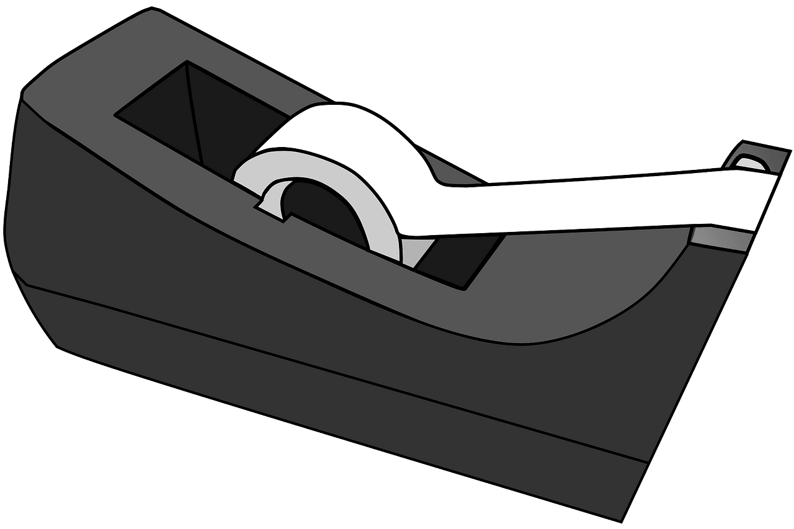

Education Center Staff Nisenan Class - September 18, 2023
In this class, we reviewed language for talking about "having" different school items in Nisenan. We learned the names for some common school items, and how to ask if someone else has one and respond. You can download a copy of the review sheet from this class by clicking here.
First, we learned Nisenan names for some common school items, like "pencil" and "paper":
| English | Nisenan |
paper |
papél |
pencil, pen |
boonóyu |
scissors |
sɨk’ə́lyu |
stapler |
inpaayutíyu |
 tape |
wac’adaktíyu |
To ask someone if they "have" one of these items, you add "-pébe mi" to the end of the item's name. The suffix "-pe" means "to have", while the suffix "-be" tells you that this is a question. The word "mi" means "you", referring to one person:
| English | Nisenan |
Do you have _____? |
_____-pébe mi? |
Do you have papél? (paper) |
Papelpébe mi? |
Do you have boonóyu? (pencil/pen) |
Boonoyupébe mi? |
Do you have sɨk’ə́lyu? (scissors) |
Sɨk’əlyupébe mi? |
Do you have inpaayutíyu? (stapler) |
Inpaayutiyupébe mi? |
Do you have wac’adaktíyu? (tape) |
Wac’adaktiyupébe mi? |
There are many ways to respond. In this class, we focused on how to say "yes" and "no", and how to tell someone to "take" or "give" the item:
| English | Nisenan |
Yes. |
Haan. |
No. |
Wiin. |
Take it! (said to 1 person) |
Meep mɨyé! |
Give it to me! (said to 1 person) |
Mey nik mɨyé! |